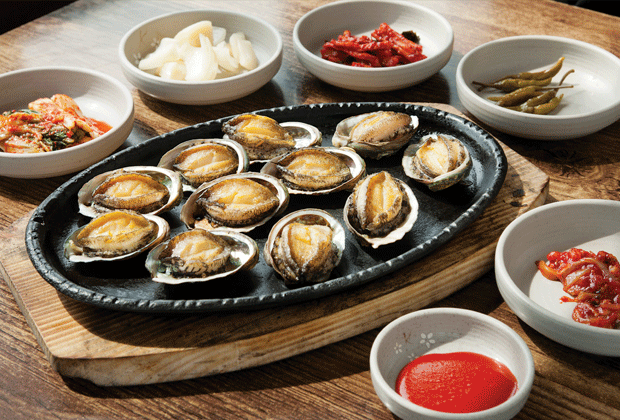

장소 상세보기
|  |
| 번호 | 10 |
|---|---|
| 분류 | 음식 |
| 장소 번호 |
F0010 |
| 장소명 | 명진전복 |
| 장소 주요 설명 |
수요미식회 TV프로그램을 통해 소개된 적이 있는 명진전복은 전복돌솥밥, 전복구이, 전복죽 등을 판매하는 인기 맛집이다. 오도독 씹히는 전복 식감에 달짝지근함을 더한 영양만점 전복돌솥밥과 제주산 전복으로 만든 요리의 처음과 끝을 여기서 만날 수 있다. |
| 장소 상세 설명 |
바로 옆 양식장에서 키운 전복으로 구이, 죽, 회, 돌솥밥 등을 차린다. 대표 메뉴는 전복돌솥밥과 전복구이. 돌솥밥은 전복 내장인 ‘게웃’을 섞은 밥에 단호박, 고구마, 당근을 올렸다. 밥 위에 전복 살과 고구마를 올려 한 숟갈 먹으면 고소하고 쌉싸래한 게웃의 향과 고구마의 단맛이 절묘하게 어우러진다. |